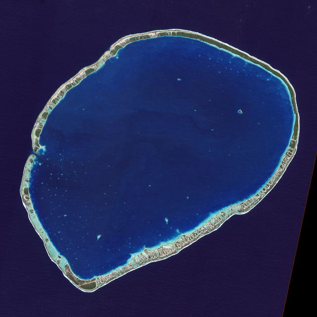

Chapitre 6 Les opérations géomatriques
Nous allons voir dans ce chapitre comment opérer des opérations géométriques sur nos vecteurs. On distingue 2 types d’opérations : les opérations unaires et binaires.
6.1 Opérations unaires
6.1.1 Simplification
La simplification revient comme sont nom l’indique à simplifier une couche vectorielle. Le cas d’usage d’un tel procédé peut être un changement d’échelle et plus généralement le besoin de réduire la taille de stockage de notre objet (par exemple pour une publication ou une carte interactive).
Le package sf contient une fonction st_simplify qui implémente l’algorithme de Douglas-Peucker1 de GEOS.
la fonction utilise le paramètre dTolerance pour controler le niveau de simplification.
load("data/territoires.RData")
departement_56 <- departements_geo %>%
filter(INSEE_DEP == "56")
departement_56_simplifie <- departement_56 %>%
st_simplify(dTolerance = 900)
departement_56_super_simplifie <- departement_56 %>%
st_simplify(dTolerance = 2000)library(patchwork)
p1 <- ggplot() + geom_sf(data = departement_56) + theme_void() + theme(panel.grid = element_blank(), panel.border = element_blank())
p2 <- ggplot() + geom_sf(data = departement_56_simplifie) + theme_void()
p3 <- ggplot() + geom_sf(data = departement_56_super_simplifie) + theme_void()
p1 + p2 + p3 + plot_layout(nrow = 1)On peut mesurer le gain réalisé par chaque opération.
Une simplification avec un
dTolerancede 900 permet d’économiser 91.6 % du stockage.Une simplification avec un
dTolerancede 2000 permet d’économiser 92.6 % du stockage.
object.size(departement_56)449480 bytesobject.size(departement_56_simplifie)37968 bytesobject.size(departement_56_super_simplifie)33448 bytesLe problème de l’agorythme Douglas-Peucker est qu’il simplifie les géométries objet par objet. Cela conduit à ce que la topologie est perdue, et va conduire à des trous ou des chevauchements. L’option preserveTopology = T de st_simplify doit permettre en théorie d’éviter ce problème, mais ne marche pas au delà d’un certain seuil.
Par exemple, prenons 2 départements autour du Morbihan.
departements_35_44_56 <- departements_geo %>%
filter(INSEE_DEP %in% c("35", "44", "56"))
departements_35_44_56_super_simplifie <- departements_35_44_56 %>%
st_simplify(dTolerance = 3000)p1 <- ggplot() + geom_sf(data = departements_35_44_56) + theme_void() + theme(panel.grid = element_blank(), panel.border = element_blank())
p3 <- ggplot() + geom_sf(data = departements_35_44_56_super_simplifie) + theme_void()
p1 + p3 + plot_layout(nrow = 1)
On constate clairement des trous à la frontière des 3 départements.
Un autre algorithme peut être utilisé qui n’a pas les mêmes limitations, l’algorithme de Visvalingam2.
Le package rmapshaper contient une fonction ms_simplify() qui implémente cet algorithme.
Ce package est une interace vers Mapshaper3 un éditeur de données cartographiques.
departements_35_44_56 <- departements_35_44_56 %>%
mutate(AREA=as.numeric(AREA))
departements_35_44_56_ms_simplifie<-ms_simplify(departements_35_44_56, method="vis", keep = 0.01)p1 <- ggplot() + geom_sf(data = departement_35_44_56) + theme_void() + theme(panel.grid = element_blank(), panel.border = element_blank())
p3 <- ggplot() + geom_sf(data = departement_35_44_56_ms_simplifie) + theme_void()
p1 + p3 + plot_layout(nrow = 1)
6.1.2 Centroïde
Le centroïde permet d’identifier le centre d’un objet géométrique. Il y a plusieur façon de définir un centroïde. La plus usuelle est le centroïde géographique, qui peut être défini comme le point d’équilibre d’un objet (celui en dessous duquel votre doigt peut faire tenir en équilibre cet objet).
La fonction permettant de définir un centroïde dans sf est st_centroid().
centres_departements<-st_centroid(departements)ggplot() +
geom_sf(data = departements) +
geom_sf(data = centres_departements,color="dark green",size=.5) +
theme_void() +
theme(panel.grid = element_blank(), panel.border = element_blank())+
labs(title="les départements et leur centroïdes")
Parfois, le centroïde peut se placer en dehors de l’objet lui même. Par exemple pensez à un atoll.

Dans ce cas on peut utiliser st_point_on_surface() qui garantit que le point est sur la surface de l’objet de départ.
6.1.3 Buffer
6.2 Opération binaires
6.2.1 Transformation affine
6.2.2 Découpage
6.2.3 Union
Douglas, David H, and Thomas K Peucker. 1973. “Algorithms for the Reduction of the Number of Points Required to Represent a Digitized Line or Its Caricature.” Cartographica: The International Journal for Geographic Information and Geovisualization 10 (2): 112–22.↩
Visvalingam, M., and J. D. Whyatt. 1993. “Line Generalisation by Repeated Elimination of Points.” The Cartographic Journal 30 (1): 46–51. https://doi.org/10.1179/000870493786962263.↩